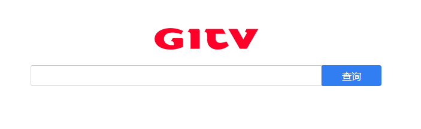

“带着问题去研究技术，在钻研过程中你会遇到更多的问题，但当这些问题逐一被解决的时候，就是你获得成就感的时候。 ”
背景 笔者目前负责的项目主要是移动运营商相关业务，由于各省运营商都是独立运营，存在不同的对接规范，另外对接时间点和对接人都不同，就造成了前期数据结构甚至是数据表上的一些差异，比如运营商用户开销户数据。
早期项目比较少的时候，我们提供业务数据查询平台的方式是，针对每个项目部署一套查询平台，数据源直接是MySql。但随着项目越来越多，数据量越来越大，使用人员在平台和功能间来回进行切换就显得越来越繁琐，另外使用MySql直接进行百万级甚至千万级的数据量查询，显然效率是跟不上的。
所以笔者就想，能不能做一套类似baidu的直观简单的全文检索平台，一是不用再通过切换平台完成不同项目的数据查询，二是不再使用传统的多查询框，而只是提供一个查询框。
问题 首先笔者面临的是两个基本问题：
分库问题 。不同的项目数据库部署在不同的IDC机房，如何提供统一的数据源；分表问题 。不同的业务数据存储在不同的数据表中，不同的业务表数据如何实现全文检索。
通过技术选型，发现Logstash和ElasticSearch可以完成这个目标：通过Logstash定时采集Mysql的增量和更新数据，推送到ElasticSearch中，而ES提供的丰富的API能直接实现自定义的全文检索功能 。
ElasticSearch 注：笔者用到的ELK（ElasticSearch + Logstash + Kibana）版本是6.2.3，本文不介绍ELK的安装方法，具体安装请自行Google。ElasticSearch集群的安装部署相对比较繁琐，可能需要调整服务器的一些配置参数，有条件的同学，建议直接使用docker镜像进行部署。
在ES5.0之前，网上很多人对es数据结构中的index和type给了简单解释，认为index等同于关系型数据库中的一个库，type等同于库中的表，这种错误的解释误导了不少人。
注意：从现在起，抛弃ES中type的概念，ES6已经将type进行了约束，一个index只允许创建一个type，因此，将type当作是关系型数据库中的数据表，显然是不成立的，另外，ES7将直接移除type属性。
那么我们如何建立与mysql数据表对应的索引呢，举个例子，我们有5个项目，每个项目有5张业务表，那么我们就可以创建5×5个索引（实际应用中，因为数据量较大，我们可能还会对RDBMS做更细的shard表，如tableA1,tableA2,…,tableA10，这种为解决RDBMS中海量数据存储而人为添加的shard表，可以不用再在es中通过索引区分，es单个索引默认5个分片，一个分片最大数据量20亿，基本上满足常规数据需求了，如果真有百亿级数据需求，可能就需要进行索引分片配置优化了。 ），如：
1 2 3 4 5 6 7 8 9 10 11 projectA_tableA projectA_tableB projectA_tableC projectA_tableD projectA_tableE ... projectE_tableA projectE_tableB projectE_tableC projectE_tableD projectE_tableE
因为ES是支持索引模糊匹配的，所以通过上面我们建立的project_table索引形式，已经可以满足我们的检索需求了，如：
查询A项目下的所有数据： GET /projectA_*
查询所有项目的tableC数据： GET /*_tableC
数据索引结构设计完成，开始进行数据采集工作。
Logstash Logstash是一款开源的服务器端数据处理管道，能够同时从多个来源采集数据、转换数据，并将数据发送到 “存储库” 中，本文中我们使用es进行存储。
一个相对完整的logstash的jdbc脚本配置示例如下：
1 2 3 4 5 6 7 8 9 10 11 12 13 14 15 16 17 18 19 20 21 22 23 24 25 26 27 28 29 30 31 32 33 34 35 36 37 38 39 40 41 42 43 44 45 46 47 48 49 50 51 52 53 54 55 56 57 58 59 60 61 62 63 64 65 66 67 68 69 70 71 72 73 input { # 标准输入，这里可以针对输入内容添加field、tags、type等属性，对于日志文件或数据库形式的数据源，通常不会用到stdin stdin { # 添加数据域，也就是字段 add_field => {"key" => "value"} # 编码插件(Coder/decoder缩写)，在输入期中用于处理不同类型的数据，如json。 codec => "plain" # logstash中的特殊字段，可理解为标签 tags => ["add"] # logstash中的特殊字段，用于标记事件类型 type => "std" } jdbc { # mysql相关jdbc配置 jdbc_connection_string => "jdbc:mysql://127.0.0.1:3306/your_mysql_database" jdbc_user => "mysql_user" jdbc_password => "mysql_password" # jdbc连接mysql驱动的文件目录 jdbc_driver_library => "/opt/logstash/conf/mysql-connector-java/mysql-connector-java-5.1.44-bin.jar" jdbc_driver_class => "com.mysql.jdbc.Driver" # 分页，数据量较大的情况下不要使用，建议自己通过sql语句做分页，因为这里是将所有数据全部查出，然后再进行limit，效率非常低 jdbc_paging_enabled => "true" jdbc_page_size => "50000" # mysql文件, 也可以直接写SQL语句在此处，如下： # statement => "SELECT * from Table_test;" statement_filepath => "/opt/logstash/conf/jdbc.sql" # 这里类似crontab，可以定制定时操作，比如每10分钟执行一次同步(分 时 天 月 年) schedule => "*/10 * * * *" type => "jdbc" # 是否记录上次执行结果, 如果为真,将会把上次执行到的 tracking_column 字段的值记录下来,保存到 last_run_metadata_path 指定的文件中 record_last_run => "true" # 是否需要记录某个column 的值,如果record_last_run为真,可以自定义我们需要 track 的 column 名称，此时该参数就要为 true. 否则默认 track 的是 timestamp 的值. use_column_value => "true" # 如果 use_column_value 为真,需配置此参数. track 的数据库 column 名,该 column 必须是递增的. 一般是mysql主键 tracking_column => "autoid" last_run_metadata_path => "/opt/logstash/conf/last_id" # 是否清除 last_run_metadata_path 的记录,如果为真那么每次都相当于从头开始查询所有的数据库记录 clean_run => "false" # 是否将 字段(column) 名称转小写 lowercase_column_names => "false" } } # logstash过滤器，可对数据进行复杂逻辑处理，如数据格式转换、改写、添加新数据等 filter {} output { # 这里输出调试，正式运行时可以注释掉 stdout { codec => json_lines } # 输出到elasticsearch的配置 elasticsearch { hosts => ["127.0.0.1:9200","127.0.0.1:9201","127.0.0.1:9202"] index => "jdbc" # 将"_id"的值设为mysql的autoid字段 document_id => "%{autoid}" # 注意：es6以后，不再推荐使用type，es7将直接去除type。 # document_type => "doc" template_overwrite => true } }
上述示例给出了最基本的mysql数据表同步示例，但现在的数据同步还面临几个问题：
示例给出的仅仅是对一张表的增量数据进行的处理，而更新的数据，自增主键是不会变化的，需要如何处理？
一个项目中我们往往有多张业务表，不可能我们有10张业务表就需要写20个配置文件（增量数据配置和更新数据配置），启动20个logstash实例，有没有解决办法？
对于MySQL中删除的数据，如何通过logstash同步到es中？
对于第一个问题，logstash提供了根据timestamp更新数据的方案，通过track业务表中的update_time值，就能完成数据的更新操作了，如下：
1 2 3 4 5 6 7 8 9 10 11 12 13 14 15 16 17 18 19 20 21 22 23 jdbc { # 这个type不是es数据结构中的type，注意不要混淆，后面会讲到用途 type => "user_info" jdbc_connection_string => "jdbc:mysql://127.0.0.1:3306/mytest" jdbc_user => "root" jdbc_password => "qwer1234" jdbc_driver_library => "/opt/soft/logstash-script/mysql-connector-java-5.1.43.jar" jdbc_driver_class => "com.mysql.jdbc.Driver" # 这里我们单独写了一条sql，用于查询某一时间点之后有过更新的所有数据 statement_filepath => "/opt/soft/logstash-script/user_info_update.sql" schedule => "* * * * *" record_last_run => "true" use_column_value => "true" # track的字段类型为时间戳 tracking_column_type => "timestamp" # 对于数据库中的update_time字段 tracking_column => "update_time" # 记录最后一条记录的update_time值，作为下一次sql语句执行的时间点 last_run_metadata_path => "/opt/soft/logstash-script/user_info_update.lastValue" clean_run => "false" lowercase_column_names => "false" }
对于第二个问题，庆幸的是，logstash允许我们在input中同时定义多个数据源（如file,jdbc等），如下，通过单个input的配置，我们实现了两张业务表的数据的新增和更新同步功能：
1 2 3 4 5 6 7 8 9 10 11 12 13 14 15 16 17 18 19 20 21 22 23 24 25 26 27 28 29 30 31 32 33 34 35 36 37 38 39 40 41 42 43 44 45 46 47 48 49 50 51 52 53 54 55 56 57 58 59 60 61 62 63 64 65 66 67 68 69 70 71 72 73 74 75 76 input { #stdin {} jdbc { type => "user_info" jdbc_connection_string => "jdbc:mysql://10.55.130.200:3306/ibcp" jdbc_user => "gitv_rd" jdbc_password => "1234.gitv_rd" jdbc_driver_library => "/opt/soft/logstash-script/mysql-connector-java-5.1.43.jar" jdbc_driver_class => "com.mysql.jdbc.Driver" statement_filepath => "/opt/soft/logstash-script/user_info.sql" schedule => "*/5 * * * *" record_last_run => "true" use_column_value => "true" tracking_column_type => "numeric" tracking_column => "id" last_run_metadata_path => "/opt/soft/logstash-script/user_info.lastValue" clean_run => "false" lowercase_column_names => "false" } jdbc { type => "user_info" jdbc_connection_string => "jdbc:mysql://10.55.130.200:3306/ibcp" jdbc_user => "gitv_rd" jdbc_password => "1234.gitv_rd" jdbc_driver_library => "/opt/soft/logstash-script/mysql-connector-java-5.1.43.jar" jdbc_driver_class => "com.mysql.jdbc.Driver" statement_filepath => "/opt/soft/logstash-script/user_info_update.sql" schedule => "*/5 * * * *" record_last_run => "true" use_column_value => "true" tracking_column_type => "timestamp" tracking_column => "update_time" last_run_metadata_path => "/opt/soft/logstash-script/user_info_update.lastValue" clean_run => "false" lowercase_column_names => "false" } jdbc { type => "user_active" jdbc_connection_string => "jdbc:mysql://10.55.130.200:3306/ibcp" jdbc_user => "gitv_rd" jdbc_password => "1234.gitv_rd" jdbc_driver_library => "/opt/soft/logstash-script/mysql-connector-java-5.1.43.jar" jdbc_driver_class => "com.mysql.jdbc.Driver" statement_filepath => "/opt/soft/logstash-script/user_active.sql" schedule => "*/5 * * * *" record_last_run => "true" use_column_value => "true" tracking_column_type => "numeric" tracking_column => "id" last_run_metadata_path => "/opt/soft/logstash-script/user_active.lastValue" clean_run => "false" lowercase_column_names => "false" } jdbc { type => "user_active" jdbc_connection_string => "jdbc:mysql://10.55.130.200:3306/ibcp" jdbc_user => "gitv_rd" jdbc_password => "1234.gitv_rd" jdbc_driver_library => "/opt/soft/logstash-script/mysql-connector-java-5.1.43.jar" jdbc_driver_class => "com.mysql.jdbc.Driver" statement_filepath => "/opt/soft/logstash-script/user_active_update.sql" schedule => "*/5 * * * *" record_last_run => "true" use_column_value => "true" tracking_column_type => "timestamp" tracking_column => "update_time" last_run_metadata_path => "/opt/soft/logstash-script/user_active_update.lastValue" clean_run => "false" lowercase_column_names => "false" } }
但又带来了一个问题，output如何判断数据需要写入到哪个索引中呢。这个时候在jdbc{}中定义的type起到了作用，logstash语法同样也支持逻辑判断，所以我们可以通过判断type值，来决定数据源的去向。
注意：再强调一下，我们在jdbc{}中用到的type不是es数据结构中的type。
1 2 3 4 5 6 7 8 9 10 11 12 13 14 15 16 17 18 19 20 21 output { #stdout {codec => json_lines} if [type] == "user_info" { elasticsearch { hosts => ["127.0.0.1:19200", "127.0.0.1:19201", "127.0.0.1:19202"] index => "ahcmcc_user_info" document_id => "%{id}" template_overwrite => true } } else if [type] == "user_active" { elasticsearch { hosts => ["127.0.0.1:19200", "127.0.0.1:19201", "127.0.0.1:19202"] index => "ahcmcc_user_active" document_id => "%{id}" template_overwrite => true } } else { } }
对于第三个问题，如何删除数据，目前暂时没有好的办法，比较可靠的办法是在mysql数据表中做优化，只做逻辑删除，不做物理删除。这里就不做深入了。
我们看看写入es中的数据文档结构：
1 2 3 4 5 6 7 8 9 10 11 12 13 14 15 16 17 18 19 20 21 22 23 24 25 26 27 28 29 30 31 32 33 34 { "_index": "ahcmcc_user_info", // 索引 "_type": "doc", // 类型（logstash输出的数据默认为doc，es6以后不建议再使用_type） "_id": "222241", // ID "_version": 3, "found": true, "_source": { // 文档基本内容（这里对应我们sql语句查询的数据） "user_id": "1331????????84001", "date_created": "20150904102740", "broadband_id": "183????5577", "date_cancelled": "", "city_name": "蚌埠市", "create_time": "2015-09-04T02:27:40.000Z", "type": "user_info", // 这里对于我们的input.jdbc中定义的type字段 "status": "开户", "update_time": "2018-07-26T05:53:50.000Z", "user_group": 2, "@version": "1", "password": "", "business_group": 0, "telephone": "", "@timestamp": "2018-07-26T06:00:00.862Z", "date_activated": "20160527225833", "user_name": "", "uid": "ahcmcc_user_info_222241", // 这里是通过filter模块添加的域，用于标识文档唯一id，因为不同业务表的自增主键id必然是会有重复的，这么做仅仅只是为了业务需要，不是必须的。 "expand": "", "id": 222241, "area_code": "22001", "stb_id": "38:fa:ca:5c:a6:0d", "area_name": "蚌埠市区", "city_code": "22001" } }
这里提供一条sql语句示例，需要注意的是，在做表联查时，务必要对自增主键id进行一次顺序排序，否则可能造成一批数据无法同步到es中，原因是每次执行完sql后，logstash记录的是最后一条数据的id值（:sql_last_value），下次执行时，按照sql的逻辑，就不会再查询id比最后一次记录要小的数据了，而进行数据表联查时，数据库是不能完全保证按照我们需要的自增主键ID进行排序的，笔者在这里遇到过坑。
1 2 3 4 5 6 7 8 9 10 11 12 13 14 15 16 17 18 19 20 21 22 23 24 25 26 27 28 29 30 31 32 33 SELECT c.id, i.city_code, i.city_name, i.area_code, i.area_name, CONCAT_WS('', c.family_id, c.group_id) AS broadband_id, c.user_id, IF(LENGTH(c.group_id) = 0, 1, 2) AS user_group, 0 AS business_group, c.date_created, c.date_activated, c.date_cancelled, c.`status` m.mac_addr AS stb_id, '' AS user_name, '' AS telephone, '' AS `password`, '' AS expand, c.create_time, c.update_time FROM cont_user_area_info AS i, cont_user_child AS c LEFT JOIN cont_user_mac AS m ON c.user_id = m.child_account_id JOIN (SELECT id FROM cont_user_child where id > :sql_last_value LIMIT 10000) AS c2 ON c.id = c2.id WHERE i.area_code = c.area_no ORDER BY c.id
最后，我们有多个项目，多个数据库，这里我们针对每个数据库启动一个logstash实例即可达到预期目标。数据采集阶段完成。
kibana kibana在elk中相对就比较简单了，直接下载安装包，配置对应的es集群后启动，进行基本索引字段配置后即可使用，这里就不再介绍。
基于SpringBoot的es全文检索平台 其实通过kibana，我们已经能完成绝大部分的日常数据查询、聚类分析了，但平台的专业性相对较强，直接提供给非技术人员使用，还是有一定难度。于是笔者根据日常查询需求，借鉴了baidu的风格，做了一套比较简单的查询平台。平台的查询界面效果如下：

JAVA后台示例代码如下：
1 2 3 4 5 6 7 8 9 10 11 12 13 14 15 16 17 18 19 20 21 22 23 24 25 26 27 28 29 30 31 32 33 34 35 36 37 38 39 40 41 42 43 44 45 46 47 48 49 50 51 52 53 54 55 56 57 58 59 60 61 62 63 64 65 66 67 68 69 70 71 72 73 74 75 76 77 78 79 80 81 82 83 84 85 86 87 88 89 90 91 92 93 94 95 96 97 98 99 100 101 102 103 104 105 106 107 108 109 110 111 112 113 114 115 116 117 118 119 120 121 122 123 124 125 126 127 128 129 130 131 132 133 134 135 136 137 138 139 140 141 142 143 144 145 146 147 148 149 150 151 152 153 154 155 156 157 158 159 160 161 162 163 164 165 166 167 168 169 170 171 172 173 174 175 176 177 178 179 180 181 182 183 184 185 186 187 188 189 190 191 192 @Document (indexName = "*" , type = "doc" , createIndex = false )@Getter @Setter @JsonNaming (PropertyNamingStrategy.SnakeCaseStrategy.class)@JsonSerialize (include=JsonSerialize.Inclusion.NON_NULL)public class Content extends BaseModel implements Serializable ... } @Getter @Setter @JsonNaming (PropertyNamingStrategy.SnakeCaseStrategy.class)@JsonSerialize (include=JsonSerialize.Inclusion.NON_NULL)public class BaseModel implements Serializable @Id private Integer id; private String uid; private String type; private Date createTime; private Date updateTime; } public interface ContentDao extends ElasticsearchRepository <Content , Integer > } @Service public class ContentService extends AbstractService <Content > private final static Logger logger = LoggerFactory.getLogger(ContentService.class); @Resource private ContentDao contentDao; @Override public Iterable<Content> query (Map<String, Object> params) if (null == params) { params = new HashMap<>(); } return contentDao.search(super .customQuery(params).build()); } } @PropertySource (value = "classpath:field.properties" )public abstract class AbstractService <T > private static final Logger logger = LoggerFactory.getLogger(AbstractService.class); @Resource protected ElasticsearchTemplate template; @Value ("${field.content}" ) protected String[] FIELD_CONTENT; @Value ("${field.product.package}" ) protected String[] FIELD_PRODUCT_PACKAGE; @Value ("${field.product.user.order}" ) protected String[] FIELD_PRODUCT_USER_ORDER; @Value ("${field.user.info}" ) protected String[] FIELD_USER_INFO; @Value ("${field.user.active}" ) protected String[] FIELD_USER_ACTIVE; public abstract Iterable<T> query (Map<String, Object> params) protected NativeSearchQueryBuilder customQuery (Map<String, Object> params) NativeSearchQueryBuilder builder = new NativeSearchQueryBuilder(); String index = (String)params.get(SearchConstants.INDEX); String type = (String)params.get(SearchConstants.TYPE); String cond = (String)params.get(SearchConstants.COND); String fields = (String)params.get(SearchConstants.FIELDS); if (StringUtils.isNotEmpty(index)) { builder.withIndices(index.split(SearchConstants.SPLIT_COMMA)); } BoolQueryBuilder boolQueryBuilder = QueryBuilders.boolQuery(); if (StringUtils.isNotEmpty(type)) { boolQueryBuilder.must(QueryBuilders.termQuery(SearchConstants.TYPE, type)); } String[] queryFields = this .getQueryFields(type); boolQueryBuilder = this .conditionParser(boolQueryBuilder, cond, queryFields); builder.withFilter(boolQueryBuilder); if (StringUtils.isNotEmpty(fields)) { builder.withFields(fields.split(SearchConstants.SPLIT_COMMA)); } List<SortBuilder> sortBuilderList = this .sorts(params); for (SortBuilder sortBuilder : sortBuilderList) { builder.withSort(sortBuilder); } builder.withPageable(this .page(params)); builder.withSearchType(SearchType.DEFAULT); return builder; } protected NativeSearchQueryBuilder detailQuery (String uid) NativeSearchQueryBuilder builder = new NativeSearchQueryBuilder(); builder.withFilter(QueryBuilders.termQuery(SearchConstants.UID, uid)); return builder; } protected BoolQueryBuilder conditionParser (BoolQueryBuilder bqb, String cond, String... fields) if (StringUtils.isEmpty(cond)) { return bqb; } for (String str : cond.split(" " )) { if (StringUtils.isEmpty(str)) { continue ; } if (str.charAt(0 ) == SearchConstants.NOT) { bqb.mustNot(QueryBuilders.multiMatchQuery(str.substring(1 ), fields).type(MultiMatchQueryBuilder.Type.PHRASE)); } else { bqb.must(QueryBuilders.multiMatchQuery(str, fields).type(MultiMatchQueryBuilder.Type.PHRASE)); } } return bqb; } protected PageRequest page (Map<String, Object> params) int pageNumber = (null == params.get(SearchConstants.PAGE_NUMBER) ? 0 : (int ) params.get(SearchConstants.PAGE_NUMBER)); int pageSize = (null == params.get(SearchConstants.PAGE_SIZE)) ? 50 : (int ) params.get(SearchConstants.PAGE_SIZE); return PageRequest.of(pageNumber, pageSize); } protected List<SortBuilder> sorts (Map<String, Object> params) List<SortBuilder> list = new ArrayList<>(); String sorts = (null == params.get(SearchConstants.SORT)) ? SearchConstants.SORT_DEFAULT_FIELD : (String)params.get("sort" ); String[] array = sorts.split(SearchConstants.SPLIT_COMMA); for (String sort : array) { SortOrder sortOrder = SortOrder.ASC; sort = sort.trim(); char first = sort.charAt(0 ); if (first == SearchConstants.SORT_DESC) { sortOrder = SortOrder.DESC; } if (first == SearchConstants.SORT_ASC || first == SearchConstants.SORT_DESC) { sort = sort.substring(1 ); } list.add(SortBuilders.fieldSort(sort).order(sortOrder)); } return list; } protected String[] getQueryFields(String type) { if (StringUtils.isEmpty(type)) { return FIELD_CONTENT; } switch (type) { case SearchConstants.PRODUCT_PACKAGE: return FIELD_PRODUCT_PACKAGE; case SearchConstants.PRODUCT_USER_ORDER: return FIELD_PRODUCT_USER_ORDER; case SearchConstants.USER_INFO: return FIELD_USER_INFO; case SearchConstants.USER_ACTIVE: return FIELD_USER_ACTIVE; default : return FIELD_CONTENT; } } }